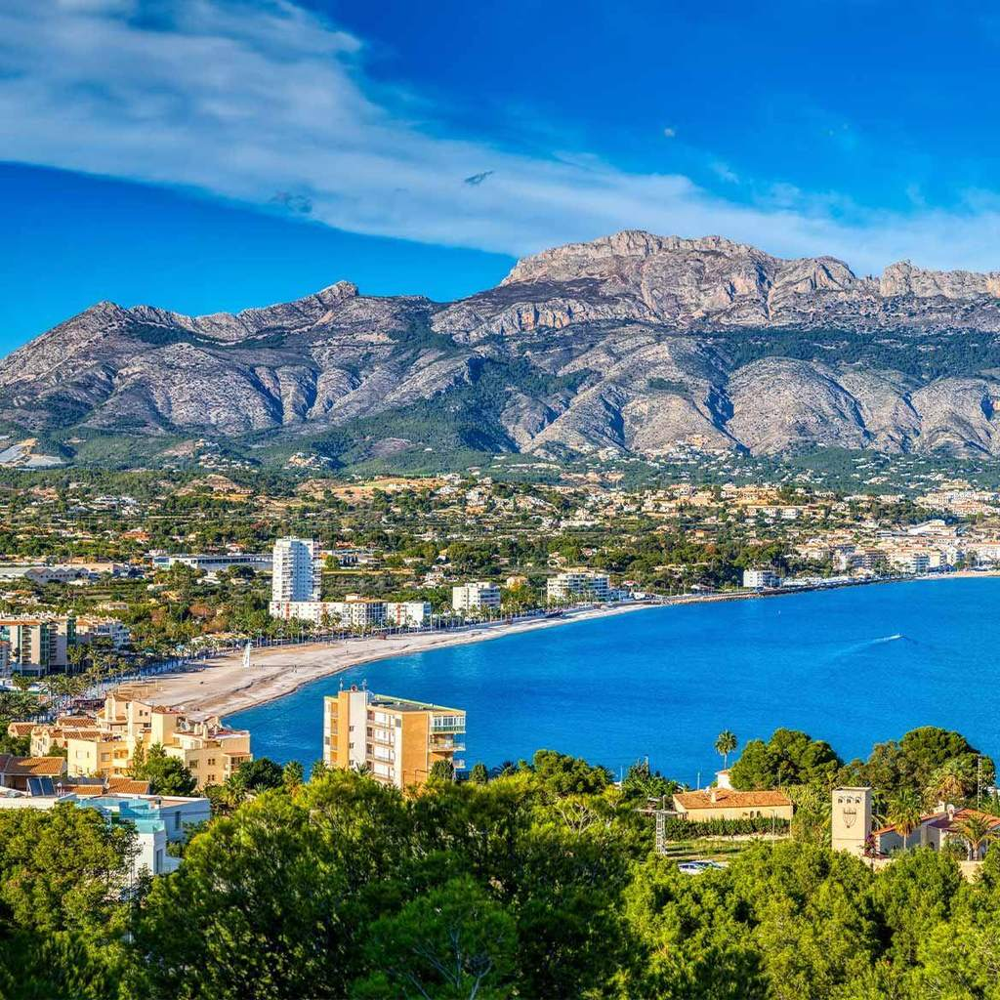
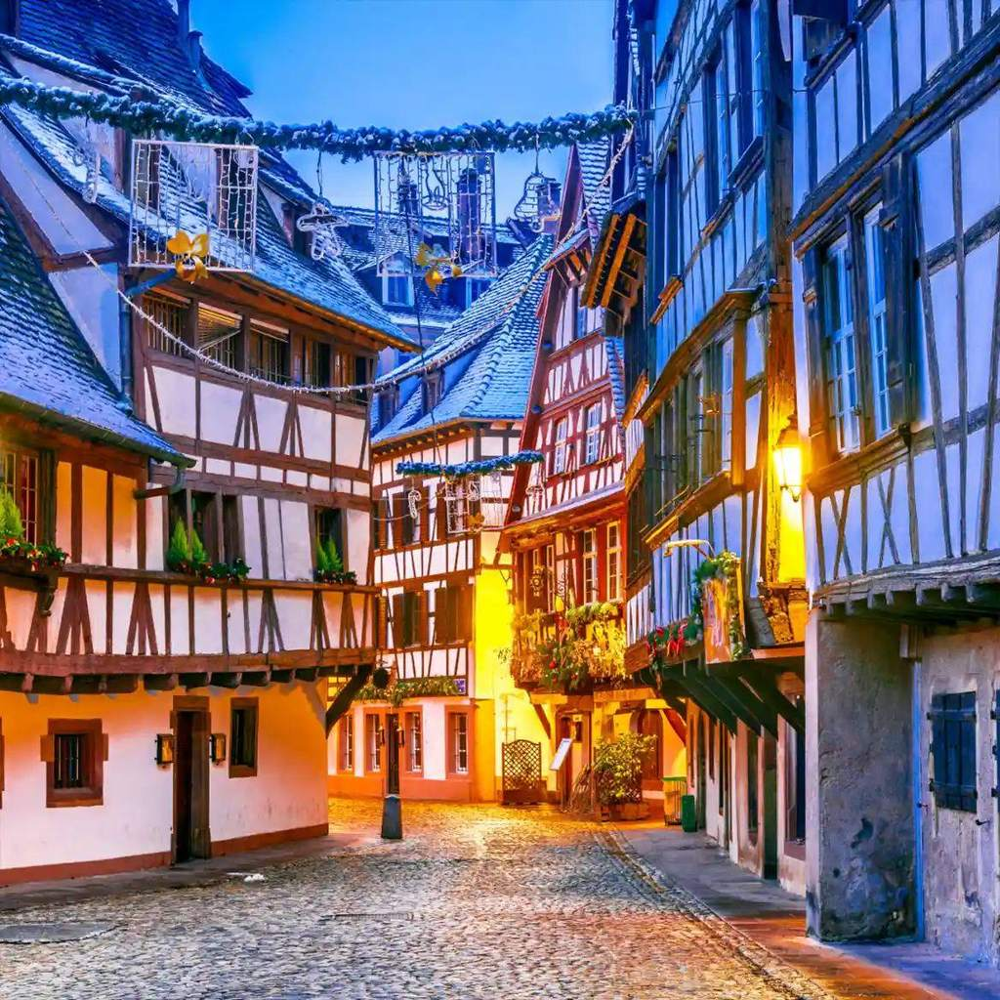
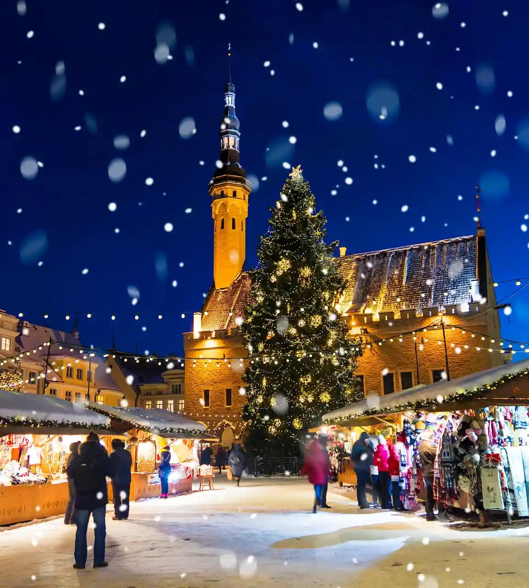
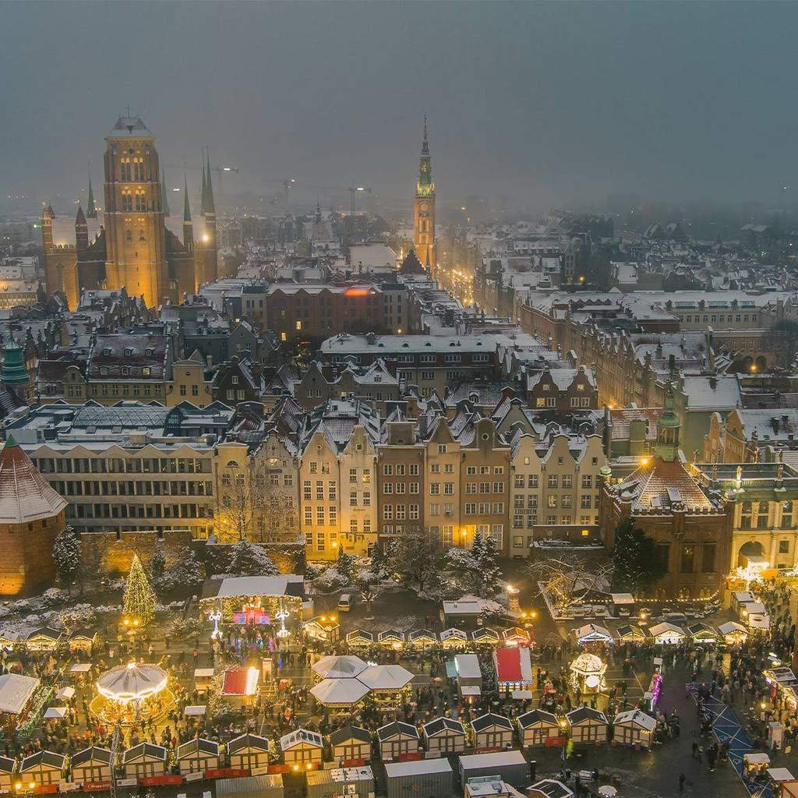
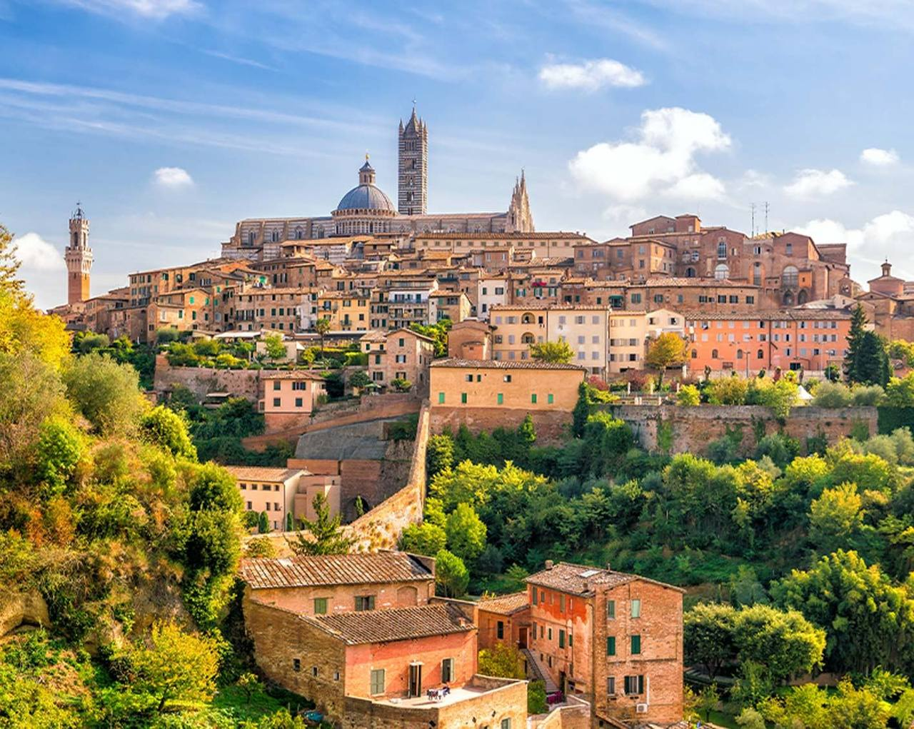

Påmeldingsturer og gruppereiser
Gode reiseopplevelser i over 90 år
Norsk reiseleder på alle turer. Opplev trygge og innholdsrike turer i hyggelig selskap – fra julemarkeder i Europa til vinterpause i Sør-Spania.
Dag 4 · Albir
Vinterpause med havutsikt
Frokost på terrassen, fjellene bak Albir og en strand som er nesten tom i januar. Det er derfor vi drar hit i januar.

Dag 3 · Rhinen
Julefeiring om bord
Elvecruise mellom tyske byer, glühwein på dekk og middag mens landskapet glir forbi.

Dag 2 · Krakow
Marked i snø
Stallene på torget, varme fra ildstedene og en by som kler snø.

Dag 1 · Gdansk
Førjul i hansabyen
Norsk reiseleder hele veien. Vi lander, sjekker inn, og går rett på markedsgaten før middag.

Bla i dagboken – klikk eller scroll
Anbefalte reisemål
Turer vi gjerne anbefaler
Alle turene har norsk reiseleder, og prisene under er per person. Se hele programmet på reisesiden.
Førjul 2026
Julemarkedenes Europa
Snart åpner julemarkedene i Europa, og vi har turene som gir deg julestemningen. Opplev en magisk førjul i historiske byer.
Gruppereiser
Skap en innholdsrik opplevelse
Vi setter opp reiseprogrammet i samarbeid med dere, og kommer med forslag på spennende aktiviteter – uansett type og størrelse på gruppen.
Foreningsturer
Mange foreninger velger oss år etter år for sine turer – både i Norge og utlandet. Vi skreddersyr reiser for idrettslag, kulturforeninger og seniorgrupper, alltid med sømløs logistikk og gode priser.
Korpsturer
Årets høydepunkt for mange korps er den årlige korpsturen til utlandet. Vi har lang erfaring med arrangering av korpsturer fra hele Norge og ut i Europa.
Korturer
Bli med på en inspirerende reise fylt med sang, samhold og uforglemmelige øyeblikk. Vi skreddersyr korturer for kor i alle sjangre.
Skoleturer
Trygge rammer, tydelig program og en reiseleder som har gjort dette før. Vi planlegger sammen med lærerne.
Om oss
90 år med reiseopplevelser
Vi har drevet med turvirksomhet i tre generasjoner, og er spesialister på skreddersydde gruppereiser og påmeldingsturer med fokus på kvalitet og personlig service.
Vi har skapt gode og varige ferieminner siden 1934.Dag Aasbø Travel

Nyhetsbrev
Reisenyheter rett i innboksen
Bli en del av reisefellesskapet med over 10 000 lesere. Hold deg oppdatert på våre nyeste turer og få reisetips tilsendt.
Ring oss
37 15 70 31Åpningstider
Alle hverdager 9–15
Besøk oss
Skolegata 3
3210 Sandefjord